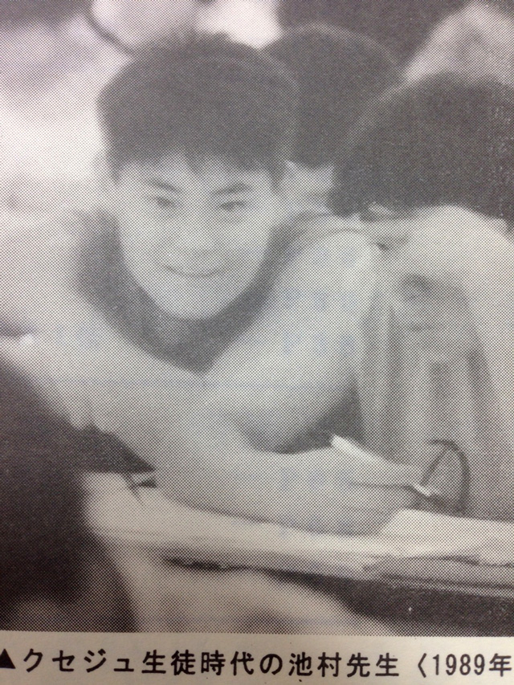

きっかけは、写真
暑くなればネクタイを外しクールビズ。
通常の授業ではなくイベント的な特訓や行事ともなれば、もはや私服もＯＫ。
それがウチの塾では通例だ。
だから中３の夏期特訓日である今日は私服で出勤するはずだった。
それが数日前に広報Ａ女史からのメールで
「８月３日は対談用の撮影です」
との通達が。
しばらくワイシャツに用はない…と思って全て洗いに出してしまったので、唯一部屋にあった普段はあまり身に着けない黒ワイシャツをまとい、汗だくになって研究所に来たというわけだ。
それがどうした！？
所長の管野、相棒の庄本、二人とも海水浴にでも行くんかい！
という出で立ちなのだ。
撮影の事は完璧に忘れていたらしく、あえなく撮影は延期。
まったくヤレヤレだぜ…。
会議も終わり、特訓授業があるので研究所から歩いてすぐの場所にある教室に向かおうとしたその時だった。
「池村先生、こんな写真が出てきたよ」
広報Ａ女史に見せられたスマホの画面には、なつかしき少年の姿があった。

これは26年前の私。
なかなかカワイイんでない？
ちなみにたくましく見える左腕は気のせいだ。
隣にいる友人の腕とたまたまカブっていることは目を凝らせば気づくだろう。
私と庄本が勤めている塾は私自身が生徒としても在籍していたわけで、このように生徒時代の写真も残っている。
これは私自身が中３生として参加した夏期特訓のときのもの。
つまりは1989年の夏、だ──。
1Q89
あの夏──
たった数日間の昭和64年から平成元年になり、初めて迎えた夏。
中３であるという紛れもなく受験生という立場にありながら、それを自覚でｋ…
ん？ タイトルが某小説のパクリじゃないかって？
よく気づいて下さいました。
だってね、別にものすごい内容があるワケじゃありませんのよ。
単に写真をきっかけに思い出した夏を書こうみたいなノリだったんで。
それが、又吉氏の影響なのかついつい調子に乗って文学チックに初めてしまったものだから、途中まで読んだ人が続きを期待しちゃったわけ。
そんな自分へのプレッシャーをパクリジョークで緊急解除したかったというね（笑）。
さてさて、自分の記憶の中の1989年っていうのは、結局ごく身近にさしせまったものしか残っておらず、要は‘15歳、中学３年生の一年間’というもので完結しているんですよね。
それで、改めてこの1989年に何があったのかを調べてみたのでした。
するとまず出てきたのが、先ほどチラッと書いた「平成元年の年」だったこと。
忘れていましたよ。
後の総理大臣である小渕官房長官が‘平成’の文字を掲げたのがあの年だったか…。
あ、そうだ。中国で起こった「天安門事件」もこの年だった。
翌年の高校１年生のときが湾岸戦争開始の年でインパクトがあって忘れかけていたけど、その一年前にこれがあった。
事件そのものはたった一日で終わってしまった（デモは２ヶ月ぐらい続いていたが）ため、この年だったということは今になって思い出した感じだけど、衝撃は大きかった。
情報統制がなされ、いまだに闇の中にある事実も多く、若い中国人はこの事件のことをよく知らない人が多いというけれど、本当だろうか…。
お、「幕張メッセの開業」がこの年の夏なんだぁ。
一応千葉県民だからね。
あ！ そういえば「ベルリンの壁崩壊」があった年かも。
お～やっぱり1989年だった。
ちょっと待て、「チャウシェスク政権崩壊（ルーマニア）」ってこの年の12月だったの！？
長年独裁を続けていた彼が、夫人と一緒に公開処刑で銃殺されるという、非常にショッキングな出来事だけど、普通にテレビでやってたもんな…。
そして年末には東証の「日経平均株価が史上最高値」。
これ以降は下落でバブルの最後か。
そして連続幼女誘拐殺人のＭ被告の逮捕・自供もこの年で、さらにオウムによる弁護士一家の事件（汗）。
さらには手塚治虫氏や松下幸之助氏の死去も。
なんて激動の年だったんだ！
まぁ、結論は出ましたね。
たまたま振り返ってみたこの1989年、受験学年なんて個人的なことなんてどうでもいいぐらい、日本でも世界でも大きな動きがあったということです。
一つひとつは記憶にあるものの、たった一年間の中だったとは…。
調べてみてよかったなと。
夏はあまり関係なかったけどね（苦笑）。